Paarden · Nevele
Onze foto's.
Het paardenteam en onze zorg in beeld.
Foto's
Een blik bij het paardenteam.
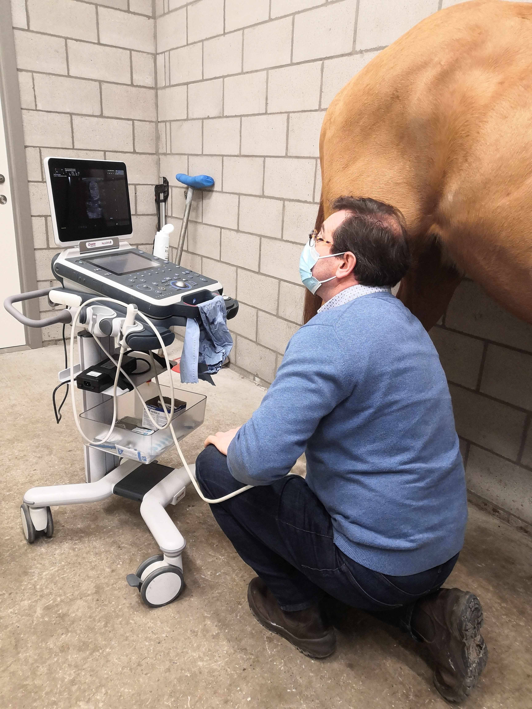
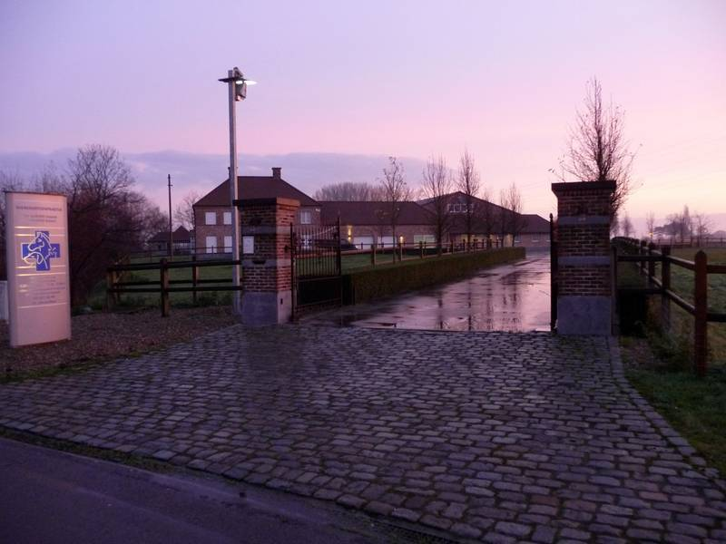
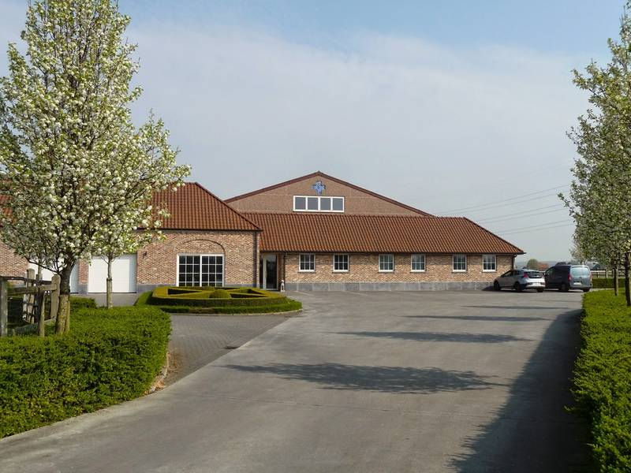
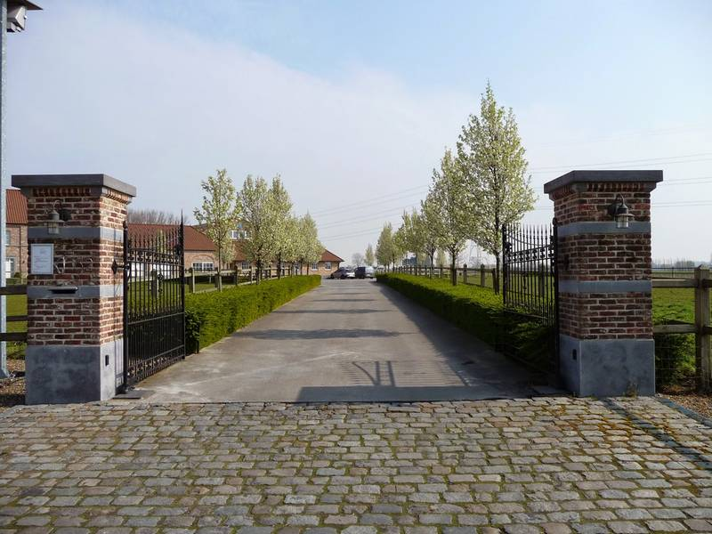
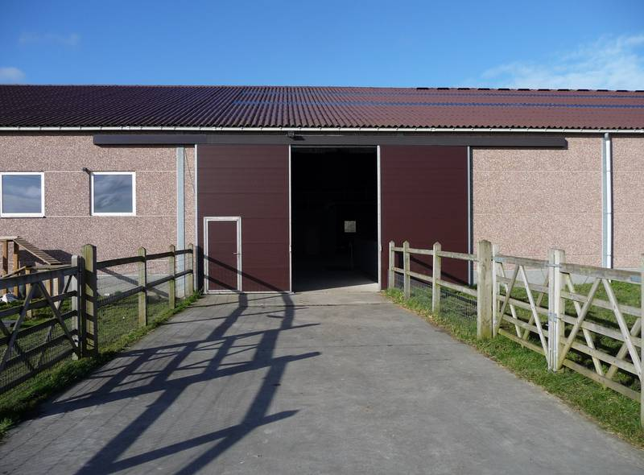
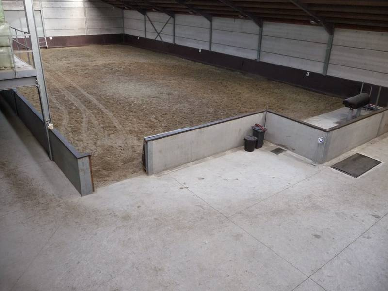
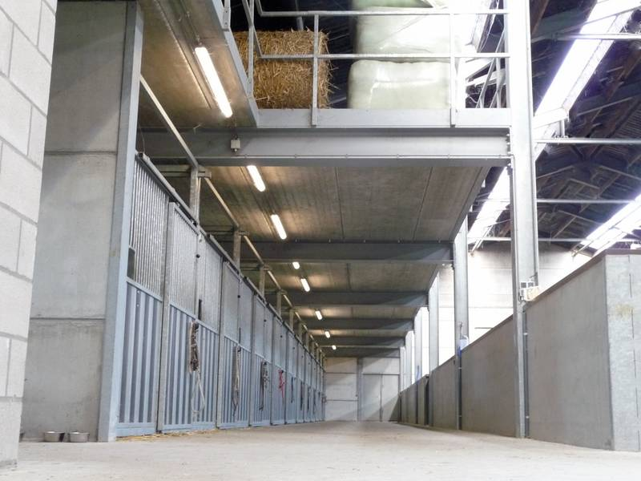
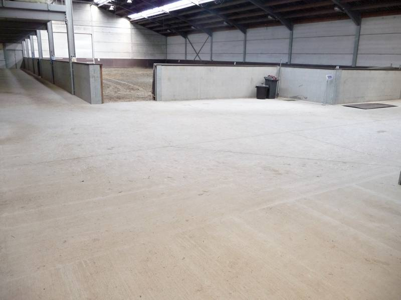
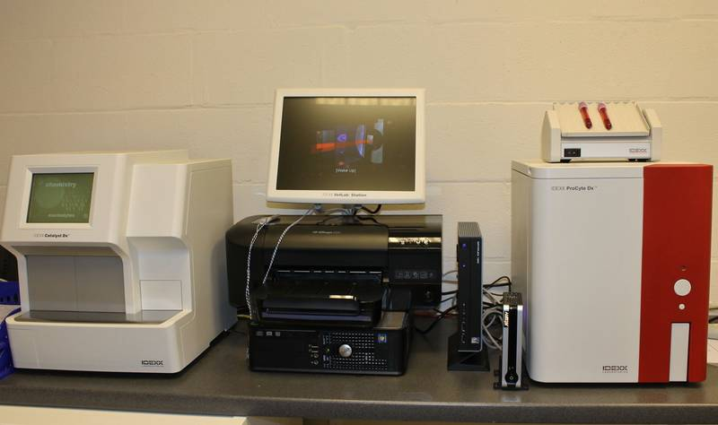

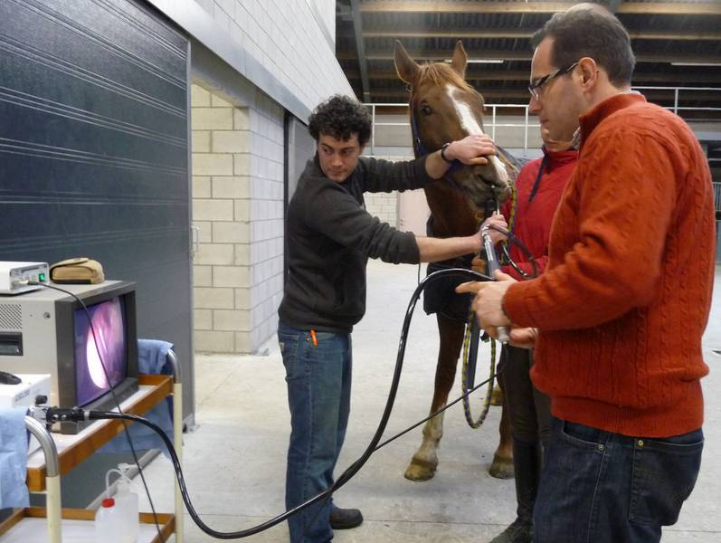
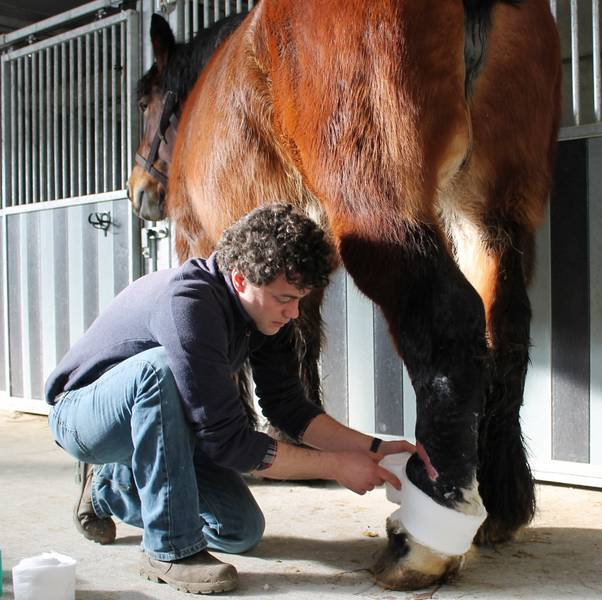
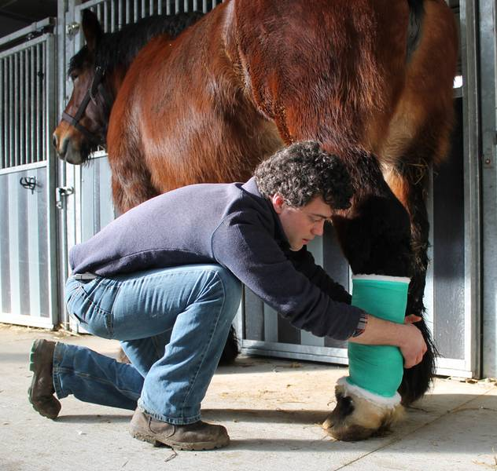
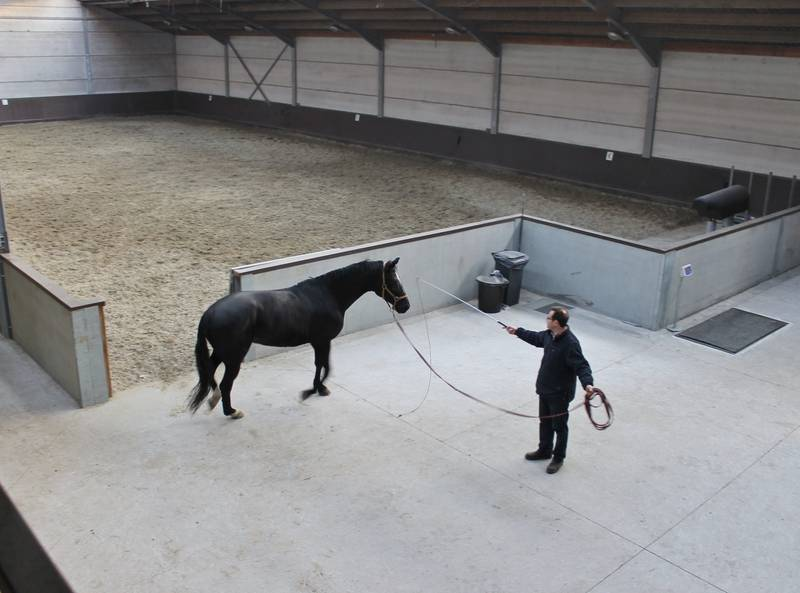
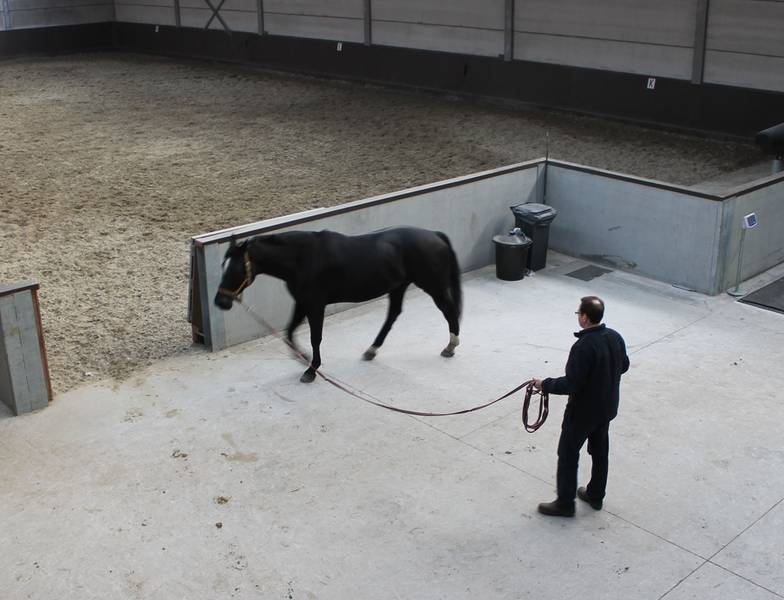
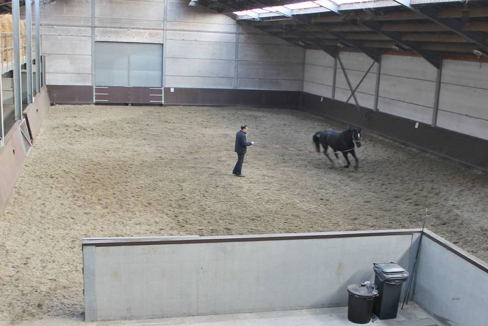
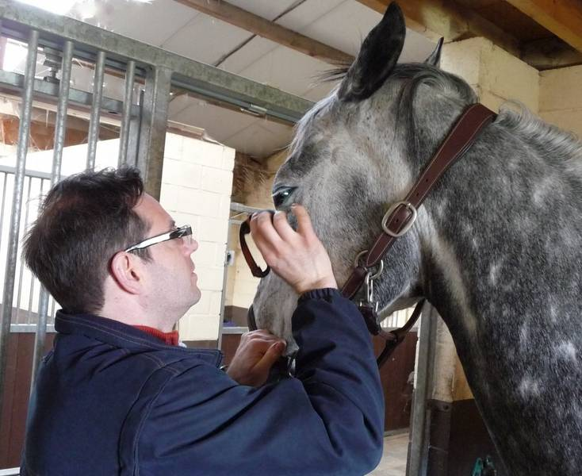
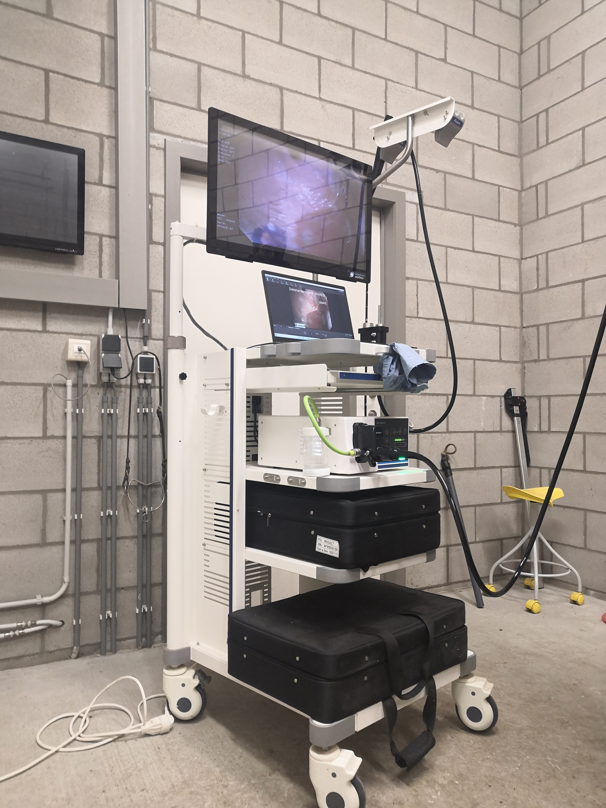
Paardenteam
Een afspraak of dringende vraag?
Biebuyckstraat 62, 9850 Deinze (Nevele)